La Casa
Una casa antigua, renovada con calma.
Muros blancos, un patio silencioso, una casa de dos plantas donde lo tradicional y lo nuevo conviven con naturalidad.
En la planta baja, cocina abierta, salón y baño renovado. Arriba, dos dormitorios y una pequeña azotea privada para leer, cenar despacio o simplemente dejar pasar la tarde.
Restaurada con sensibilidad, combina el carácter de una casa histórica con el confort de hoy.
Casa vacacional en Conil de la Frontera, cerca de la playa y del casco antiguo, ideal para quienes buscan un alojamiento tranquilo con terraza privada en una casa andaluza con encanto.
Luz · Materia · Calma
Interior de Casa Carlota


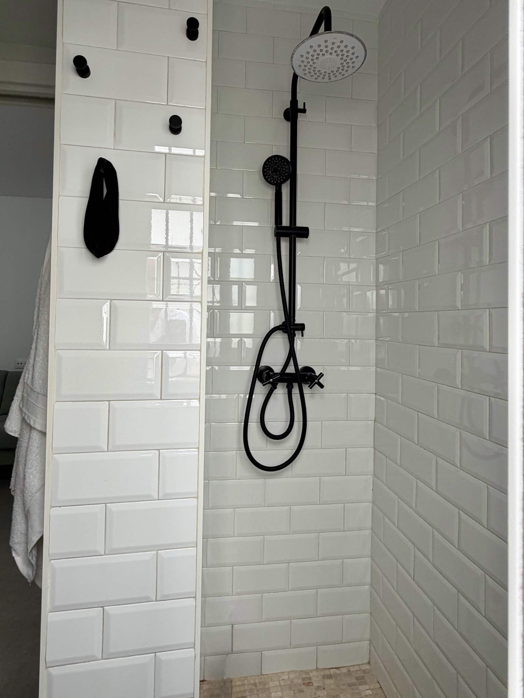

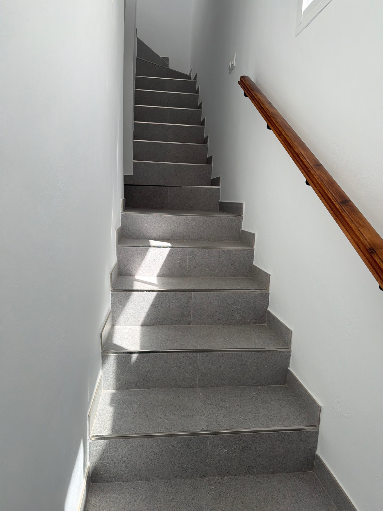

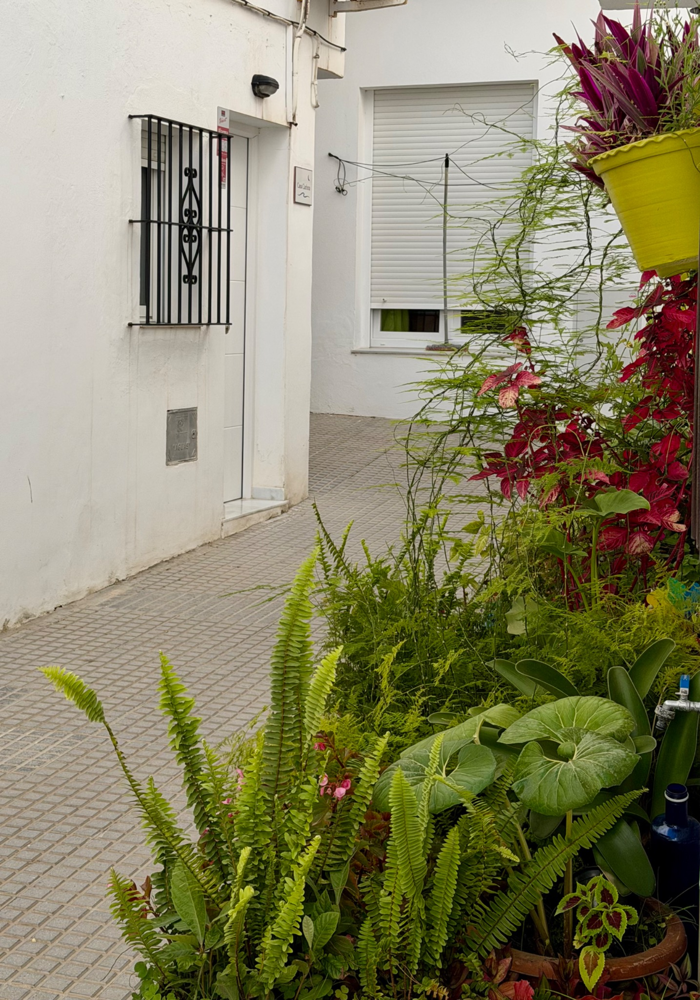

Zwischen Licht, natürlichen Materialien und mediterraner Ruhe erzählt Casa Carlota von einem Wohngefühl, das mehr ist als Unterkunft. Historische Substanz, reduziertes Design und andalusische Gelassenheit verbinden sich zu einem Ort mit Charakter.
Wer ein stilvolles Ferienhaus in Conil mit Authentizität, Ruhe und Nähe zum Meer sucht, findet hier einen Rückzugsort mit Seele.
Dunas & Playas
Momentos junto al mar
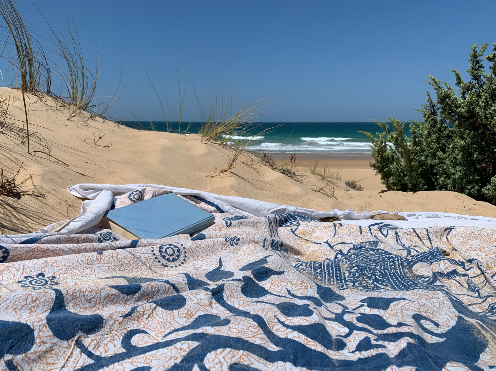

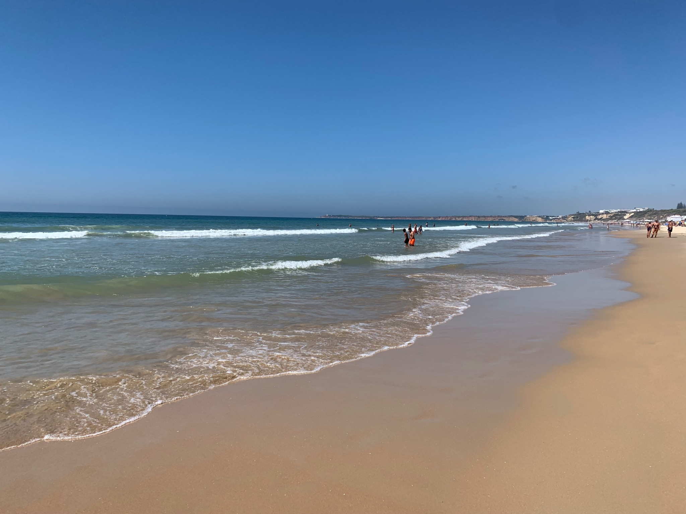
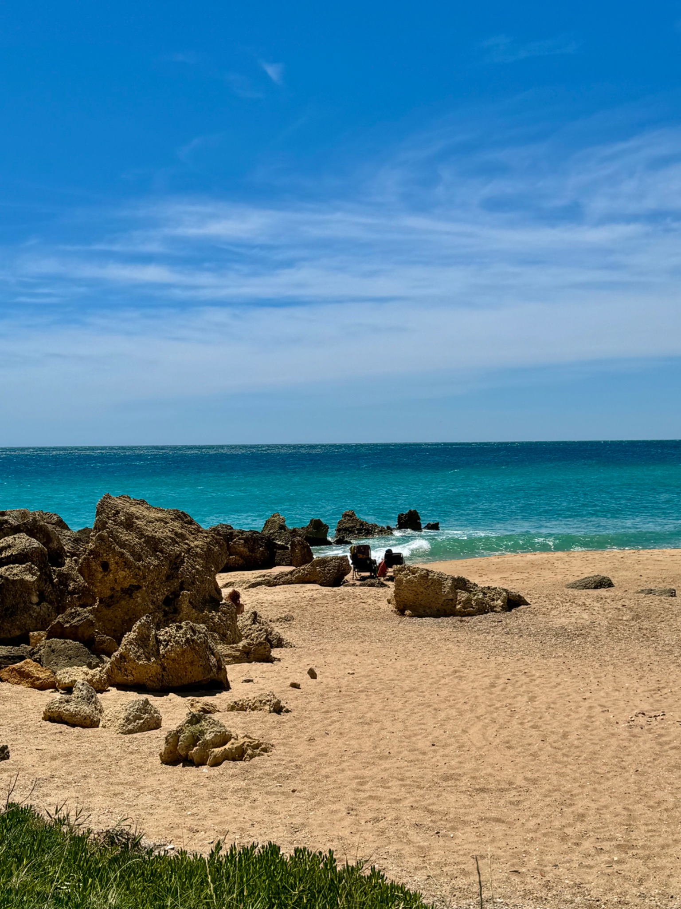
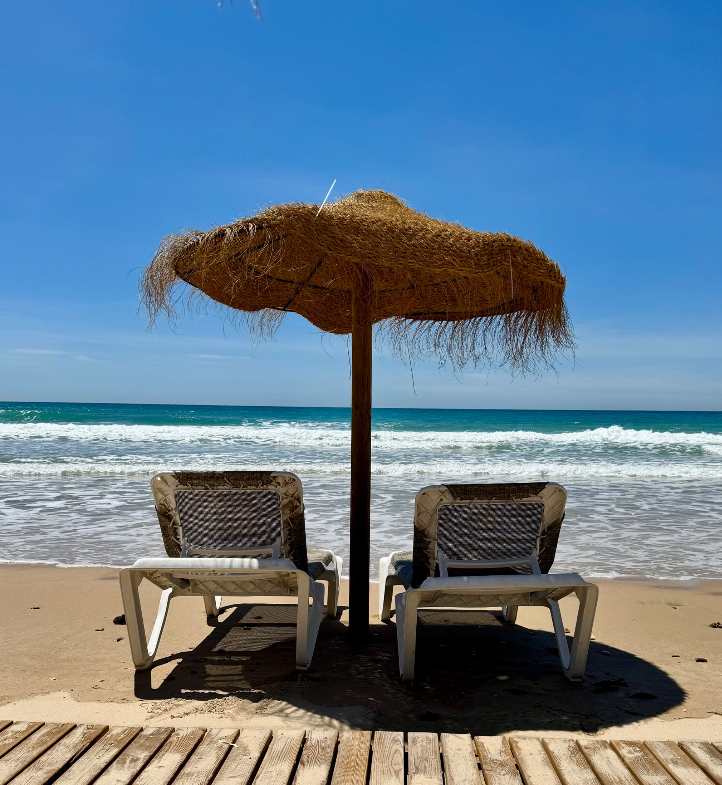
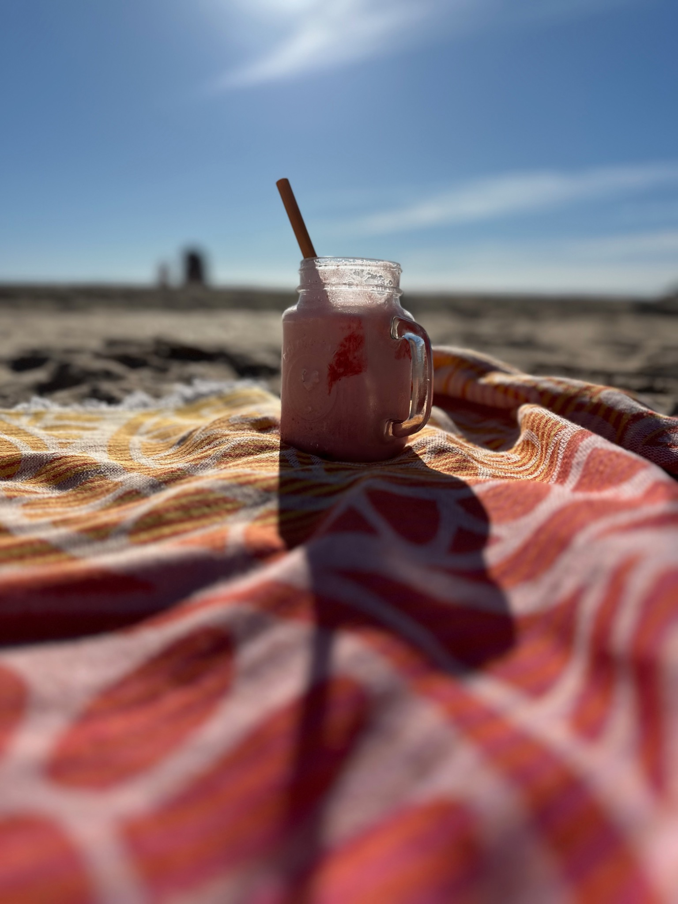

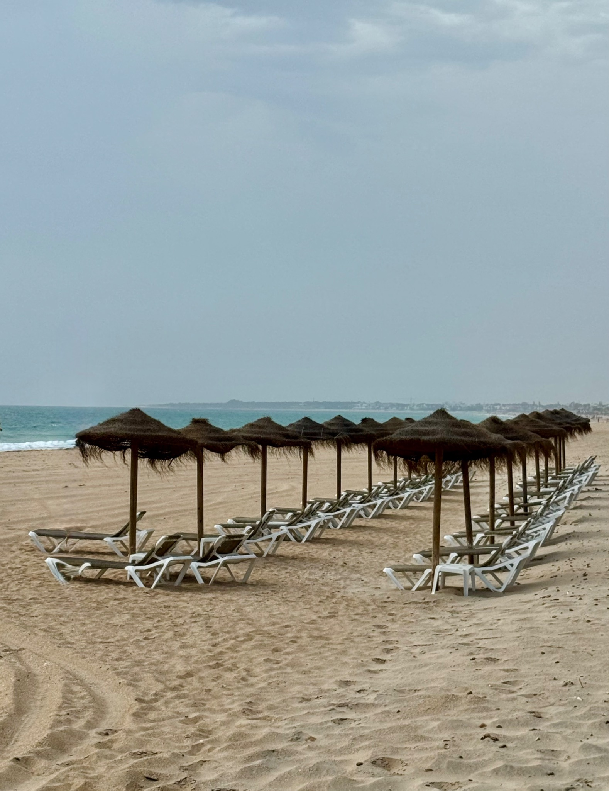
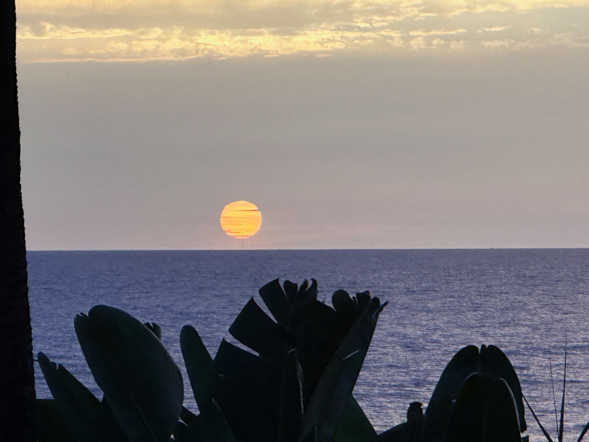

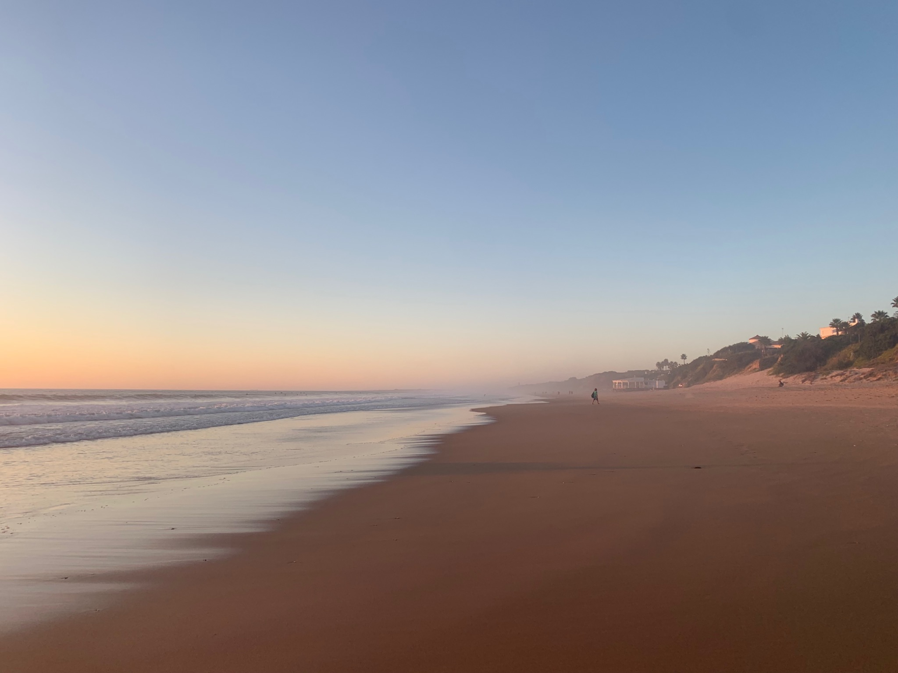
Zwischen Atlantik, Dünenlandschaften und endlosen Stränden zeigt sich die Costa de la Luz von ihrer schönsten Seite. Rund um Conil liegen stille Buchten, weite Sandstrände und Sonnenuntergänge, die jeden Tag anders wirken.
Casa Carlota verbindet das Leben im Dorf mit dem Meer direkt vor der Tür – ideal für Gäste, die Andalusien authentisch erleben möchten.